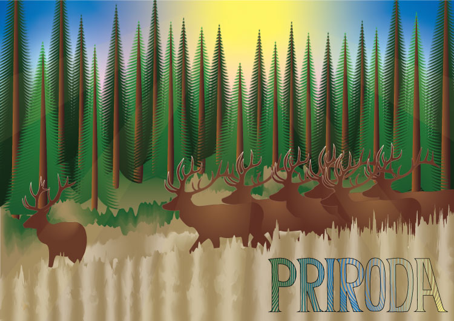

Otvorila sam novi dokument u Illustratoru i podesila koordinatni sustav tako da ishodište bude u donjem lijevom kutu. Uključila sam mrežu i snap to grid da mi bude lakše postaviti točke. Pomoću Pen alata sam nacrtala dvije Bezierove krivulje prema zadanim koordinatama, a zatim im dodala sive tonove i različite debljine linije. Nakon toga sam napravila blend između krivulja s razmakom od 3 mm. Na kraju sam pomoću svojih inicijala napravila masku, pretvorila tekst u objekte, spojila ih i dodala sivu konturu. Sve sam završila vlastitim dizajnom s blendanim krivuljama i spremila rad u .ai i .pdf formatu.

Pomoću pen alata crtala sam dijelove predloška. Svakom djelu sam uredila boju, obrub i transparenciju. Neke dijelove koji su se ponavljali sam rotacijom kopirala. Za pozadinu sam kreirala vlastiti uzorak.


U ovom zadatku sam radila složene oblike koji se sastoje od više staza, i to tako da sam koristila metode spajanja (Unite) ili oduzimanja oblika (Subtract/Difference), ovisno o tome što mi je u tom trenutku trebalo. Kad sam spojila oblike, koristila sam različite gradijente – isprobala sam linearne, radijalne, a i mesh gradijent s više boja da postignem zanimljivije prijelaze. Također sam koristila transparenciju da se elementi bolje uklope jedni s drugima, i pazila sam na redoslijed slojeva (Layers) kako bi svi dijelovi grafike bili pravilno složeni i vidljivi. Na kraju sam dobila kompleksan, višeslojan dizajn koji kombinira oblike, boje i prijelaze.

U ovom projektnom zadatku sam prvo napravila vlastiti font s riječi "PRIRODA", koji sam kasnije koristila u ilustraciji. Radila sam u Illustratoru na formatu A3, gdje sam pomoću Bezierovih krivulja elemente trave, jelena i borova, prema predlošku. Koristila sam više vrsta gradijenata – linearne, radijalne i mesh – i definirala sam vlastite swatch boje u CMYK sustavu. Na neke dijelove slike primijenila sam transparenciju, a koristila sam i maskiranje, blend alate, te razne transformacije kao što su zrcaljenje i skaliranje. Sve elemente sam organizirala po slojevima i pazila da rad bude tehnički čist i složen.
U ovoj vježbi sam retuširala fotografije koristeći različite Photoshop alate. Prvo sam napravila kopiju originalne slike da sve promjene radim na novom sloju. Uklanjala sam nedostatke pomoću zamućivanja (Dust & Scratches), kloniranja (Clone Stamp i Healing Brush) i kopiranjem selekcija u nove layere. Koristila sam Burn i Dodge alate za lokalno tamnjenje i posvjetljivanje dijelova slike, a na kraju sam napravila globalne korekcije boje i kontrasta koristeći Levels i Brightness/Contrast. Sve sam radila pažljivo, sloj po sloj, da zadržim realističan izgled slike.


U ovoj vježbi radila sam digitalno koloriranje crno-bijele fotografije u Photoshopu. Koristila sam alate za selekciju poput Magnetic Lasso Tool i Quick Mask Mode kako bih precizno odabrala dijelove slike koje želim obojati. Selekcije sam spremala kao posebne kanale kako bih ih mogla ponovno koristiti. Zatim sam pomoću Adjustment Layera (Hue/Saturation) dodavala boju na te dijelove, koristeći Layer Mask za kontrolu gdje se boja primjenjuje. Na kraju sam napravila pet različitih verzija slike s različitim bojama
U ovoj vježbi radila sam fotomontažu u Photoshopu. Otvorila sam četiri slike i pomoću različitih alata za selekciju izrezivala sam dijelove iz svake slike – koristila sam Polygonal Lasso, Magnetic Lasso, Quick Mask, kanale i Refine Edge. Izrezane dijelove sam umetnula u baznu sliku, namjestila ih pomoću alata za transformaciju i prilagodila boje kako bi se uklopili u kompoziciju. Uz to sam radila i realističnu sjenu pomoću Drop Shadow opcije, koju sam odvojila u novi layer kako bih ju mogla dodatno uređivati. Na kraju sam koristila alate za korekciju boja poput Color Balance i Levels kako bih uskladila tonove elemenata i cijele slike.
U ovom projektnom zadatku radila sam složenu kompoziciju u Photoshopu koristeći tehnike retuširanja, fotomontaže i koloriranja. Kao bazu sam odabrala jednu fotografiju i na njoj sam retuširala oštećenja. Iz druge skupine sam izrezivala elemente iz više fotografija, pažljivo ih selektirala i umetnula u baznu sliku. Također sam koristila i vlastite fotografije, uključujući jednu na kojoj sam ja. Za izrezivanje elemenata koristila sam različite alate za selekciju, uključujući selekcije putem kanala, koje sam spremala kao zasebne kanale. Elementima sam mijenjala veličinu i perspektivu pomoću transformacijskih alata. Kolorirala sam nekoliko elemenata u boje koje se razlikuju od originala i koristila više maski za korekciju boja i koloriranje. Neke elemente sam dodatno doradila izradom realističnih sjena. U kompoziciju sam ubacila i tekst, prilagođen perspektivi slike. Sve slojeve i kanale sam uredno imenovala i organizirala, a sve datoteke sam spremila u izvornim formatima i JPEG-u za završnu predaju.

U videu sam izrezala dio koji želim da se ponavlja. Maknula sam zvuk i spremila jedan frame kako bih ga mogla obraditi u Photoshopu. U Photoshopu sam alatom za brisanje izbrisala dio slike koji želim da pomiče tijekom trajanja cinemagrafa. Vratila sam sliku u Premiere i ubacila ju kroz cijelo trajanja odabranog video isječka. Spremila sam video u gif formatu te sam kasnije taj file uvezla u Photoshop kako bih ga smanjila.
U ovom zadatku radila sam obradu dva video isječka. Isječke sam izrezala i spojila oba djela. Na svaki video sam dodala po nekoliko efekata – koristila sam scale za zumiranje, rotation za lagano okretanje kadra, fade in/fade out, te sam dodatno doradila boje pomoću efekata kao što su color balance i brightness/contrast. U video sam ubacila jedan statični tekst koji stoji na ekranu kroz određeni kadar, te jedan pomični tekst koji se kreće po slici. U oba teksta sam uključila svoje ime i prezime. Također sam promijenila zvuk u videu – originalni sam izbrisala i dodala drugačiju glazbu koja bolje odgovara atmosferi videa. Kad sam sve završila, izvezla sam video u mp4 formatu
Za ovu vježbu sam napravila svoju web stranicu koristeći HTML i CSS. Na početnu stranicu sam stavila naslov sa svojim imenom i kratki opis stranice. Napravila sam navigacijsku listu s tri linka – jedan vodi na drugu web stranicu, jedan na HTML dokument koji sadrži slike i multimedijske elemente, a treći na PDF. Dodala sam paragraf o sebi u kojem sam koristila razne oznake za stilizaciju teksta, kao što su bold, italic i citati. Napravila sam i dvije liste – jednu uređenu i jednu neuređenu. U drugom HTML dokumentu sam umetnula slike, video s YouTube-a, jedan video s računala i kratku audio datoteku. Sve sam dodatno stilizirala pomoću CSS-a – promijenila sam boje, veličine teksta, margine i dodala okvire. Sve datoteke sam organizirala u mape i uploadala na svoj GitHub profil.

 Melina Rudelić - moja prva web stranica
Melina Rudelić - moja prva web stranica